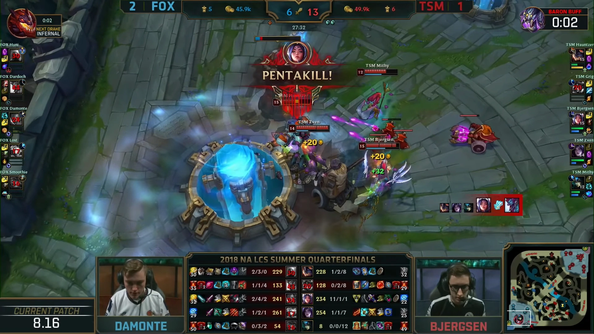
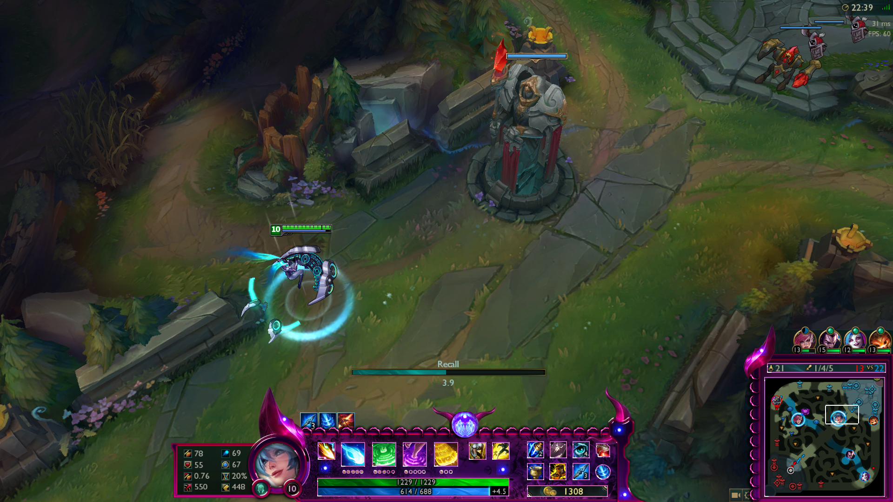
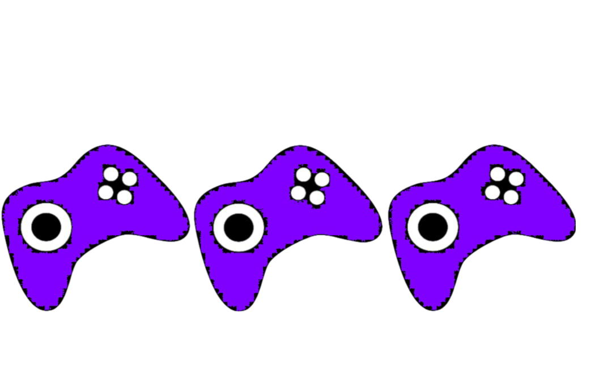

League of Legends: Maailman suosituin MOBA-Peli
League of Legends (LoL) on moninpelattava online-areenapeli (MOBA), joka on saavuttanut valtavan suosion ympäri maailmaa. Peli tarjoaa pelaajilleen jännittävän ja strategisen pelikokemuksen, jossa taito ja tiimityö ovat avainasemassa.
Yksi LoL:n suurimmista vahvuuksista on sen laaja valikoima pelattavia hahmoja eli mestareita. Jokaisella hahmolla on oma uniikki pelityylinsä ja taitonsa, mikä tarjoaa pelaajilleen valtavasti vaihtelua ja mahdollisuuksia löytää oma suosikkihahmonsa. Lisäksi pelin jatkuvat päivitykset ja tasapainotukset pitävät pelin tuoreena ja mielenkiintoisena vuodesta toiseen.

Pelattavuudeltaan LoL on syvä ja monipuolinen. Pelissä on useita eri pelimuotoja, mutta yleisin ja suosituin on Summoner's Rift, jossa kaksi viisihenkistä tiimiä taistelevat hallitakseen karttaa ja tuhotakseen vastustajien tukikohdan. Tämä vaatii tiimityötä, taktiikkaa ja nopeaa reagointikykyä, mikä tekee jokaisesta pelistä ainutlaatuisen ja jännittävän.
Graafisesti LoL on värikäs ja tyylikäs. Pelin animaatiot ja hahmodesign ovat erittäin laadukkaita, ja pelimaailma on täynnä yksityiskohtia ja eloa. Lisäksi pelin äänimaailma luo tunnelmallisen ja intensiivisen kokemuksen, joka syventää pelaajan uppoutumista peliin.
Vaikka LoL onkin valtavan suosittu ja arvostettu peli, se ei ole täydellinen. Pelin yhteisössä saattaa olla myös negatiivisia piirteitä, kuten toksinen käytös ja häirintä. Tämä voi vaikuttaa pelaajien kokemukseen ja nautintoon pelistä, ja siksi yhteisön parantaminen ja myönteisen ilmapiirin edistäminen ovat tärkeitä kehityskohteita.

Kokonaisuudessaan League of Legends on kuitenkin merkittävä ja vaikuttava peli, joka on ansainnut paikkansa pelimaailman huipulla. Sen syvä pelattavuus, laaja valikoima hahmoja ja jatkuvat päivitykset tekevät siitä loistavan valinnan niille, jotka rakastavat strategista ja kilpailullista pelaamista.
